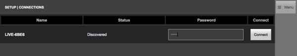
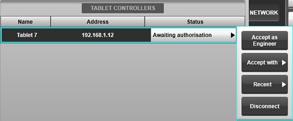
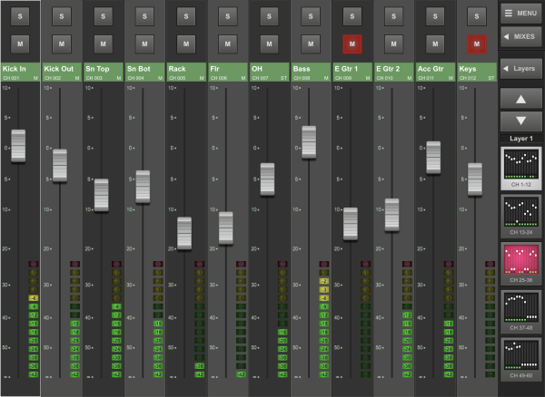
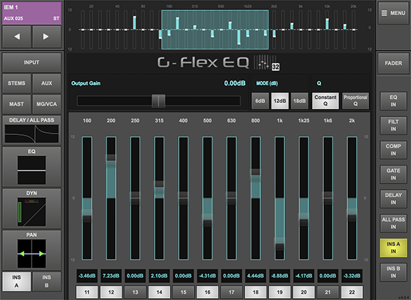
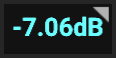
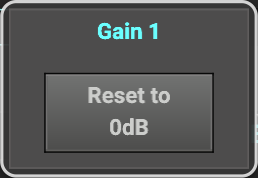
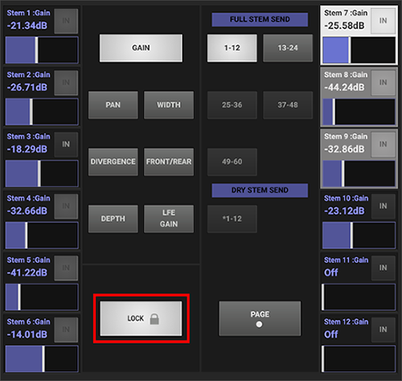
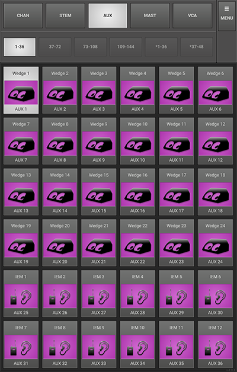
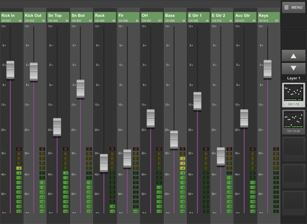

TaCo Tablet Control
The console can also be controlled wirelessly using the TaCo (Tablet Control) app for iPad, Mac and Android. The app can be limited to control an individual Aux mix for artists or unlocked to quickly and easily control all fader levels, sends and mutes as well as path processing parameters. Up to 10 tablets can be connected simultaneously for providing mix capabilities to each performer on stage (of which up to 2 tablets in Engineer Mode are supported).
Please Note: A minimum of 5Mbps of wireless network bandwidth is required for each TaCo connection. e.g. if 10 TaCo instances are connected, a minimum of 50Mbps of wireless network bandwidth will be required.Installing and Updating the TaCo App
The TaCo app can be found in the Apple App Stores for iPad and Mac, and the Google Play Store for Android devices. Just search for "SSL Live TaCo".
Tap Get or Install in the app store listing to begin the installation process. The app requires permission to read and modify the device's storage to store local settings and preferences on the device, and network access to connect to the console. Accept these permissions if prompted to do so.
If automatic updating of apps has been disabled, the TaCo app will need to be updated manually from the Apple App Store or Google Play Store.
To check which version of TaCo is currently installed, open TaCo and check the version number in the bottom right corner.
Please Note: The latest TaCo app is compatible with all console software versions from V4.7 onwards. TaCo will not connect to earlier software versions; please contact SSL Support if running software older than V4.7.Connecting TaCo to SSL Live
- Install the SSL Live TaCo app from the Apple/Android App Store onto your iPad, Mac or Android tablet.
- If using TaCo on an iPad or Android tablet, connect the main console's Network port to a wireless router or access point. If using the Mac version of TaCo, a wired or wireless connection between the console and Mac may be used.
- Connect the tablet/Mac to the network. Note: TaCo will use the first network adapter detected. Disable all other wired and wireless network connections before starting TaCo to ensure the correct network adapter is used.
- If your wireless access point does not issue IP addresses to connected devices, ensure the IP address of the console's Connectivity network is in the same subnet as that of your device e.g. If the console's Connectivity IP address is 192.168.1.1, subnet mask 255.255.255.0, your device's IP address should be 192.168.1.[2-254], subnet mask 255.255.255.0. Adjust the console's Connectivity network settings in MENU > Setup > Options > NETWORK tab.
-
Open the TaCo app on the tablet/Mac. Any consoles detected on the network will be listed.

- On the console, set a console password in MENU > Setup > Options > REMOTE tab.
- Type the same password into the Password field in TaCo and tap Connect
-
The Status area in TaCo will now display Awaiting authorisation.
A flashing
 icon will appear on the console's status bar to indicate a pending connection.
icon will appear on the console's status bar to indicate a pending connection.
-
Navigate to the console's Remote tab (MENU > Setup > Options > REMOTE tab)
and locate the device in the Tablet Controllers area that is awaiting authorisation. Press Awaiting authorisation and select one of the options presented.

- Accept as Engineer will provide control of all fader levels, mute status, path processing and send levels to buses.
- Use the Accept with button to select a specific Aux. TaCo will be limited to control of the selected Aux mix (e.g. for giving to a performer to control their own mix).
- The Recent button provides a list of Auxes that have been connected to most recently.
- Use the Disconnect button to decline the connection request.
- Use the Ban button to decline the request and prevent the device requesting further access.
-
Once accepted, the console and TaCo connection areas should now show Connected
and the console's status bar will show a
 icon.
icon.
To disconnect, on the console go to MENU > Setup > Options > REMOTE tab and press the Connected OK button and select Disconnect, or tap Disconnect in TaCo's Setup page.
Note: TaCo can also be connected to a PC running SOLSA to act as a remote controller (only when SOLSA is not itself a remote to a console). Follow the steps above; ensure the PC and tablet/Mac are in the same subnet.Engineer Mode
In Engineer Mode TaCo has remote control over the following console parameters:
- Path Fader, Solo and Mute
- Panning
- Input Controls (e.g. Gain, +48V, Digital Trim etc.)
- Path EQ and Filter parameters
- Path Compressor and Gate parameters
- Path Delay and All Pass Filter parameters
- Stems assignments and send levels
- Aux assignments and send levels
- Master assignments
- Mute Group assignments
- VCA assignments
- Inserted Effects Rack module parameters
- Console's Selected path (optional)
Up to two instances of TaCo in Engineer Mode are supported.
In Engineer Mode TaCo has three main pages: Faders, Controls and Screen Query, described below.
Faders
To access the Faders page tap MENU > FADERS.
Control of the console's path fader levels, Solo and Mute parameters is available from this page. Tap on the fader cap and drag up/down to adjust the fader level. Press the M (Mute) and S (Solo) buttons to toggle their state.

A maximum of 12 faders are displayed at any time, to match the console's fader tiles. When TaCo is first connected to a console, TaCo's banks and layers are System Layers (i.e. listed in Path order).
In TaCo, the banks are displayed to the right. Tap on a bank to bring it to the screen.
Above the bank buttons are up and a down arrow buttons to cycle through the layers.
Tap the Layers button to open the navigation window. Overview shows all the banks available in System Layers, and Layers shows the banks laid out in User Layers as they are on the console. Tapping on a bank within a User Layer will assign that Tile's User Layers to the screen.
Adjusting Stem & Aux Mixes
To remote control send levels to Stems and Auxes, tap MIXES.
All Stems and Auxes on the console are now displayed at the top of the screen. Tap a Stem or an Aux to adjust send levels to that bus. Swipe left of right at the top of the screen to switch between viewing Stems or Auxes.
Paths can be displayed in two different ways when in Mixes mode: Compressed Query or Expanded Query. These modes behave in the same way as the Query modes on the console. To choose Compressed Query or Expanded Query, go to MENU > SETUP. The Query modes are listed at the bottom of the page.
Tap MIXES again to exit the mix view and return to controlling the main fader levels for all paths.
Controlling Path Parameters
Double-tap on the coloured path name area to access processing parameters for that path. These are identical to those available from the Controls page and described in more detail below.
Tap the Close button to return to the Faders view.
Controls
Select MENU > CONTROLS to access the path controls in TaCo, or double-tap on the coloured path name area in the Faders view.
The path name, colour, number and format is displayed in the top left corner. The arrow keys can be used to scroll through paths.
In TaCo, at the top (when in portrait) or to the left (when in landscape) select which parameters to view. The options are:
- INPUT - All Input parameters including analogue gain and digital trim
- DELAY/ALL PASS - Delay control and All Pass Filter
- EQ - Equaliser and Filters
- DYN - Dynamics section including Compressor and Gate
- PAN - Panning
- STEMS - Stem assignment and send levels
- AUX - Aux assignment and send levels
- MAST - Master assignment
- MG/VCA - Mute Group and VCA assignment
- INS A - Effects Unit inserted on Insert A
- INS B - Effects Unit inserted on Insert B
Tapping any of these buttons will display the parameters for each section.
Path processing is laid out with a graphic in the centre of the screen, surrounded by sliders for each parameter. Each Effects Unit from the Effects Rack has its own visuals and controls.
Parameters can be adjusted by tapping and dragging the points on the graphic, or by tapping and dragging the sliders around the sides.
EQ band Q controls and Dynamics Knee can be adjusted using the pinch gesture.
To switch path processing or inserts in/out, tap the corresponding IN button. These buttons are located below the page buttons at the top in portrait, or to the right of the page in landscape. Tap the IN button again to disengage and switch the processor out.
The path EQ and Dynamics processors and some inserted Effects can also be viewed in full screen. To do this tap FULL SCREEN. Tap FULL SCREEN again to return to the normal view.
In landscape, the Fader button in the Menu bar opens the fader for the currently selected path.

Selecting Paths in TaCo
In Engineer mode TaCo can be linked to follow the console's Selected path, or operate independently to allow different paths to be selected on the console and TaCo.
With the Follow Console Path option turned off in TaCo's Setup page, selecting paths in TaCo's Faders and Controls pages will not affect or be affected by the console's Selected path. This is a useful workflow if TaCo is used away from the console surface or as an independent controller to the console.
Engaging the Follow Console Path option will link TaCo's Selected path to the console's Focus Fader, which in turn can follow the console's Selected path or be locked to an individual path. This provides close integration between the console surface and TaCo, allowing a smooth workflow between the two (e.g. if TaCo is located on the Tablet Tile of an L100, L200 or L450 to augment the console's control surface).
With Follow Console Path engaged and the Focus Fader unlocked, the console's SELECT keys can be used to select paths to TaCo (as well as the console's Focus Fader). Similarly, selecting a fader strip in TaCo's Faders page or using the path select arrows in the top left corner of the Controls page will also change the console's Focus Fader and Selected path.
To assign and lock a specific path to the Focus Fader, refer to the instructions in the Master Tile section. Ensure that Link Control Tile is enabled in the console's Surface options page (MENU > Setup > Options > SURFACE tab). TaCo will now remain displaying the chosen path until the Focus Fader is unlocked or its assigned path is changed.
Please note:For consoles with the Control Tile fitted, TaCo and the Control Tile will always display the same path when Follow Console Path is engaged.
Resetting Parameters
Some parameters, such as EQ band gain, panning and Stem/Aux send level, can be reset from TaCo. Parameters with this feature enabled have an arrow beside their value.

Tap on the gain value and a pop up will appear.

Tap the Reset button that appears to reset that parameter to its default values.
Locking Sends to Buses
Send levels to buses can be locked to prevent accidental changes. To do this navigate to either the Stem or Aux pages. Engage the padlock to lock, and disengage to unlock.

Screen Query
The Screen Query page (MENU > QUERY) allows users to query a path from TaCo and use all of the console's Fader Tiles to display the contributions.
Choose a path type using the CHAN, STEM, AUX, MAST, VCA buttons. Up to 36 paths can be displayed at one time. Tap the 1-36, 37-72, 73-108 etc. buttons to view more paths.
To find out more about ScreenQuery on the console, please see the Screen Query section.
In landscape, the Fader button in the Menu bar opens the master fader for the currently selected path.

Aux Mode
TaCo utilises the same Compressed Query technology as the Live console, meaning only the channels turned on to the selected Aux are displayed.

When connecting TaCo to the console, tap Awaiting Authorisation in the console's Remote page and tap Accept with then choose the desired Aux to control (see Connecting TaCo to SSL Live section above).
On the tablet/Mac tap MENU > FADERS to access the mix page.
TaCo will display all contributing paths and provide control of their send levels to the selected Aux.
TaCo displays 12 paths at a time. For large lists, use the bank icons to the right to cycle through paths.
Aux Mode always displays contributing Channels and Stems in Compressed Query mode.
Setup
There are display options for TaCo to help the user customise how paths are displayed. These settings are in MENU > SETUP.
At the bottom of the page are the following buttons:
- Compressed Query and Expanded Query: Determines the display mode to use when adjusting Mixes in Engineer mode (same as Compressed and Expanded Query functionality on the console).
- Stems before Channels: Engage to list Stems before Channels when viewing Mix contributions (applicable to Aux mode and Engineer Compressed Query mode only).
- Left Justify Controls: To move the Menu to the left side of the screen.
- Follow Console Path: Links TaCo's Selected path to the console's Focus Fader (Selected) path (Engineer mode only; see Engineer Mode section above for further details).
Tap on any of these buttons to engage them. Tap again to disengage.
All TaCo pages work in either portrait or landscape. To switch between portrait and landscape simply tilt your tablet to a different orientation. (For this to work please ensure that you have not locked orientation in your tablet's settings).
Auto-Reconnect
An Auto-Reconnect feature automatically reconnects TaCo connections with the console in the event of a disconnection.
Once a TaCo device has been authorised by the console, if it loses its connection to the console and tries to reconnect within a 30-minute period of the disconnection, TaCo will automatically be reconnected to the console. The device will automatically receive the same authorisation as it had before the disconnection. So if the device was authorised to adjust sends to Aux 7 only and it loses connection, when it reconnects it will automatically be re-authorised to Aux 7 only. The console operator can continue to mix during this process without needing to re-authorise devices that lose connection.
Auto-Reconnect will also work if the device loses connection due to battery loss. When the device is plugged into power, and TaCo is reopened, the connection to the console will be automatically restored (providing this is within the 30 minute Auto-Reconnect period).
To check the connection status of a device go to the console's MENU > Setup > Options > REMOTE tab.